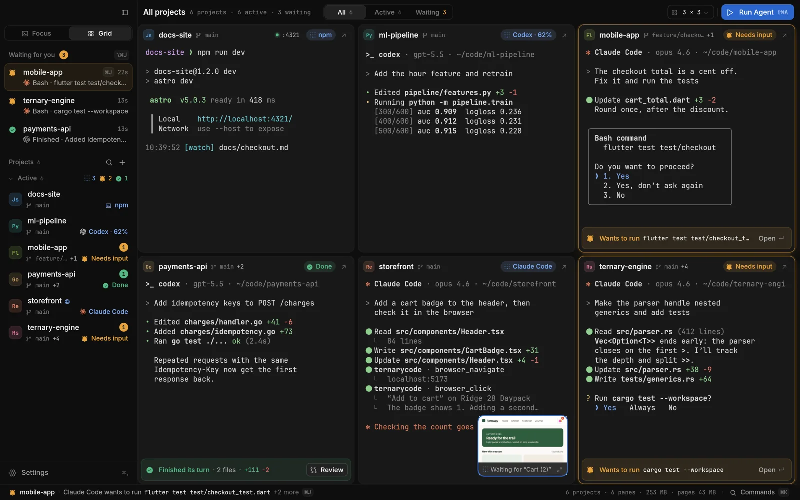
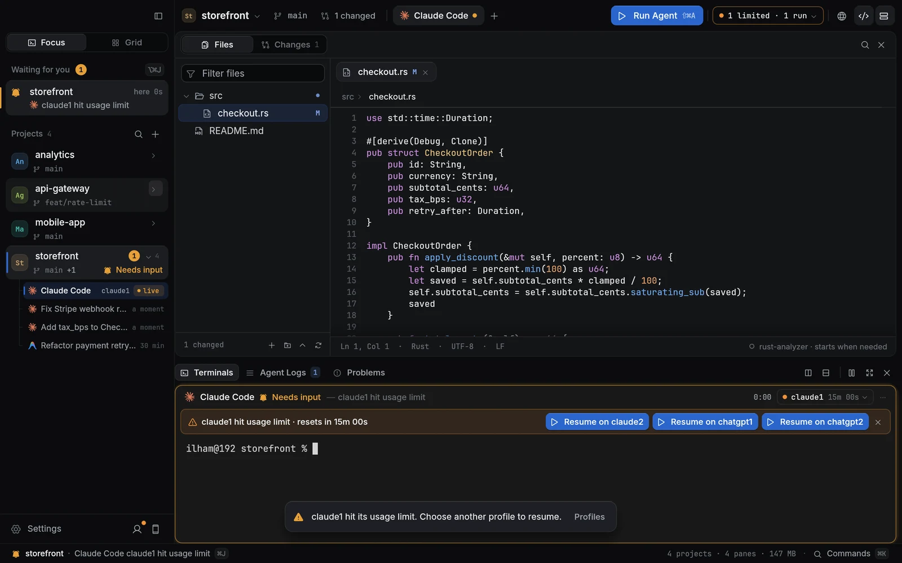
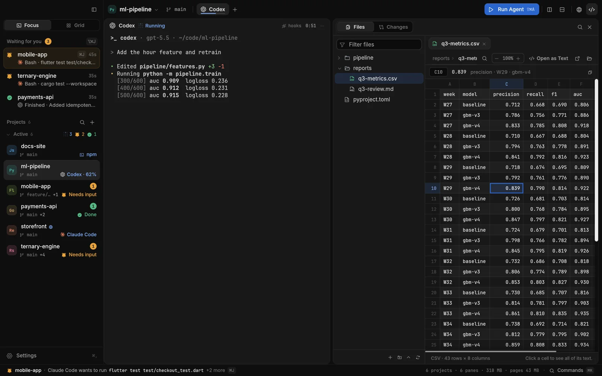

Which agent
needs you now?
One native window for all your projects and the coding agents working in them. When Claude Code, Codex or OpenCode waits for you, TernaryCode knows, and ⌘J takes you there.
Native. Not a browser
in a costume.
No Electron and no web page behind the window. TernaryCode is one small app that opens before you’ve looked away, and does nothing at all when nothing changes.
Measured on an Apple M1 Pro with a release build. Your shells and agents use their own memory on top.
Status you can trust, not a guess.
Each agent tells TernaryCode what it’s doing through its own hooks. The ones that wait for you line up at the top of the sidebar, in the order ⌘J visits them; ⇧⌘J takes you back.
- Hooks are added per launch for Claude Code and Codex. Nothing in your config changes.
- Notifications and the Dock badge only when you’re not looking.
Wants permission or an answer. It goes to the top of the queue, the oldest first.
PermissionRequest · NotificationWorking on its own. The light runs along the </ of the app’s icon.
UserPromptSubmit · PreToolUseFinished its turn. It says how many files it changed, with Review one click away.
Stop · agent-turn-completeAn error, or a command that exited badly. Without a reliable signal it says Active, never a guess.
StopFailure · exit statusEvery project, live, side by side.
The Grid shows every project at once, each tile a real terminal, not a picture of one. Two agents asking for permission and one that finished: you see all three without opening anything.
- A finished agent’s tile says how many files it changed, with Review at hand.
- Tabs and splits per project come back at the next start. Shells start when you look at them, so twenty projects open as fast as one.

1mobile-app waits: Claude Code wants to run flutter test. Open takes you there. 2Done: 2 files changed. Review is one click. 3Even the agent’s browser page, live in its tile.A browser your agents can drive.
An agent opens your dev server beside its terminal, clicks through it, types, reads the page and the console, and answers dialogs, with real input events. You watch it work. Click into the page to Take Over; Hand Back when you’re done.
- The system’s own web view: WebKit, WebView2, WebKitGTK. Sign-in pop-ups, downloads, find, zoom and the inspector all work.
- Each agent gets a page of its own. Agents never type your passwords.
See what the agent touched, line by line.
The Code drawer opens beside the terminals, not instead of them. Files an agent changed carry its logo; lines it added or changed are marked by the line numbers, so you can read before you answer.
- Your language servers: rust-analyzer, gopls, TypeScript, pyright, clangd… Definitions, references, rename, hover and problems.
- Servers start only when you open a file, and stop when you don’t need them.

1Changed by Claude Code in this run. 2Added and changed lines, marked in the gutter. 3The question it asked stays in view.Review it, merge it, or throw it away.
Review shows what changed since the agent started or since the last commit, with the words that changed highlighted, unified or side by side.
- Start an agent in a git worktree of its own, so two agents never write over the same files.
- A worktree’s review lists its commits and ends with Merge and Remove.
Read the diff, press one button.
Under the files you just reviewed: commit, push and open the pull request in one go, with each step shown as it runs.
- The message is already written, from the task you gave the agent and its last words. ✦ asks Claude Code or Codex to write it from the diff.
- Only the files you check go in. On main it pushes to main; on a branch it opens the pull request with your GitHub CLI, or its form in the Browser panel.
- When git needs a password or the push is rejected, a terminal takes over and your commit stays safe.
The report your agent wrote, right there.
PDF, Word, PowerPoint, Excel, CSV and images open in place, read in Rust off the UI thread. A CSV opens as a table, with find and zoom, beside the agent that wrote it.

Built by someone who lives in it.
Updates don’t stop your agents
On macOS, an update installs while you work and TernaryCode restarts in place. The programs in your panes keep running.
Pick up the conversation
Agents that can continue a conversation offer Resume after a restart, in the pane where they were.
Dev servers become chips
A local server a pane starts shows up in the top bar. One click opens it in the Browser panel, beside the agent.
A real terminal
24-bit colour, mouse, IME, ⌘-click links, ⇧⌘F search in every pane, shell integration for zsh, bash, fish and PowerShell.
Everything is a keystroke away
The command palette ⌘K lists every command, with its shortcut, so you learn them as you go.
One app, three systems
On Windows it draws its own title bar with menus and runs PowerShell 7. On Linux the Browser panel uses WebKitGTK.
Your hands stay on the keys.
The command palette, ⌘K, lists all of them.
Yours, on your machine.
No account
Download it and use it. There is no sign-in, no plan and no trial. Your agents keep their own logins, as they do in any terminal.
No telemetry
TernaryCode connects to one place: GitHub, to check for updates, and you can turn that off. Pushes and pull requests go through your own git and GitHub CLI. Hooks and browser tools talk to the app over a local socket, with a token per pane.
Open source
MIT licensed, built in the open with egui, alacritty_terminal and wry. Read it, build it, change it.
Two minutes from here.
TernaryCode updates itself after that. Then install the agents you use (claude, codex, opencode, agy); Run Agent shows how when one is missing.
Run this in Terminal recommended
It checks the download’s SHA-256 and signature, then installs into /Applications. macOS 12 or later, Apple Silicon and Intel.
curl -fsSL https://raw.githubusercontent.com/ilhamnadhif/ternarycode/main/scripts/install.sh | bashOr download the disk image
Download the installer
Windows 10 (1809) or later, x64.
If PowerShell says “running scripts is disabled”
Set-ExecutionPolicy -Scope CurrentUser RemoteSignedRun it once, or install PowerShell 7 with winget install Microsoft.PowerShell.
What it needs
OpenGL (a software renderer is fine) and glibc 2.28 or later. The Browser panel needs WebKitGTK 4.1 (libwebkit2gtk-4.1-0); without it, pages open in your default browser. A blank window? LIBGL_ALWAYS_SOFTWARE=1 ternarycode.
Is it really free?
Yes. TernaryCode is MIT licensed, with no account, no paid tier and no telemetry. You pay only for the agents you already use, through their own plans.
Which agents does it work with?
Run Agent has presets for Claude Code, Codex, OpenCode and Antigravity CLI, and you can add any command as a preset of your own. Each agent is installed on its own, as usual.
Status comes from hooks for Claude Code and Codex (added per launch) and from a plugin for OpenCode. Antigravity CLI has no hooks yet, so it shows Active.
Will it change my agent’s settings?
Not unless you ask. Hooks are passed for each launch. If you want agents you start by hand to report too, Settings → Agents installs them once: it shows the exact change first, keeps a backup, and Uninstall restores the file byte for byte.
Is it an IDE?
No, and on purpose. TernaryCode is terminal-first: agents do the writing, you read, review and answer. The Code drawer is there to read what changed, with your language servers, and for the small edit.
Does my code go anywhere?
Not through TernaryCode. It sends nothing about you or your code; it only asks GitHub whether there’s an update. When you push or open a pull request, your own git and GitHub CLI send it where you asked. Your agents talk to their own providers, exactly as they do in any terminal.
Why does my system warn me about it?
The builds aren’t notarized or code-signed yet. On macOS, the one-line installer checks the download’s SHA-256 and signature itself; with the .dmg, use Open Anyway in Privacy & Security. On Windows, SmartScreen asks once.